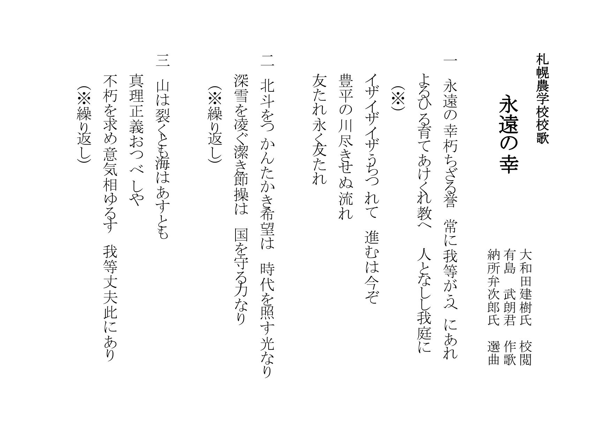
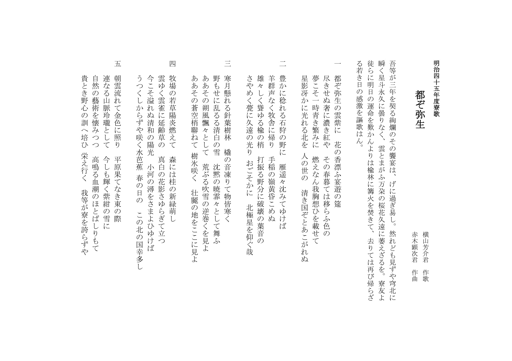
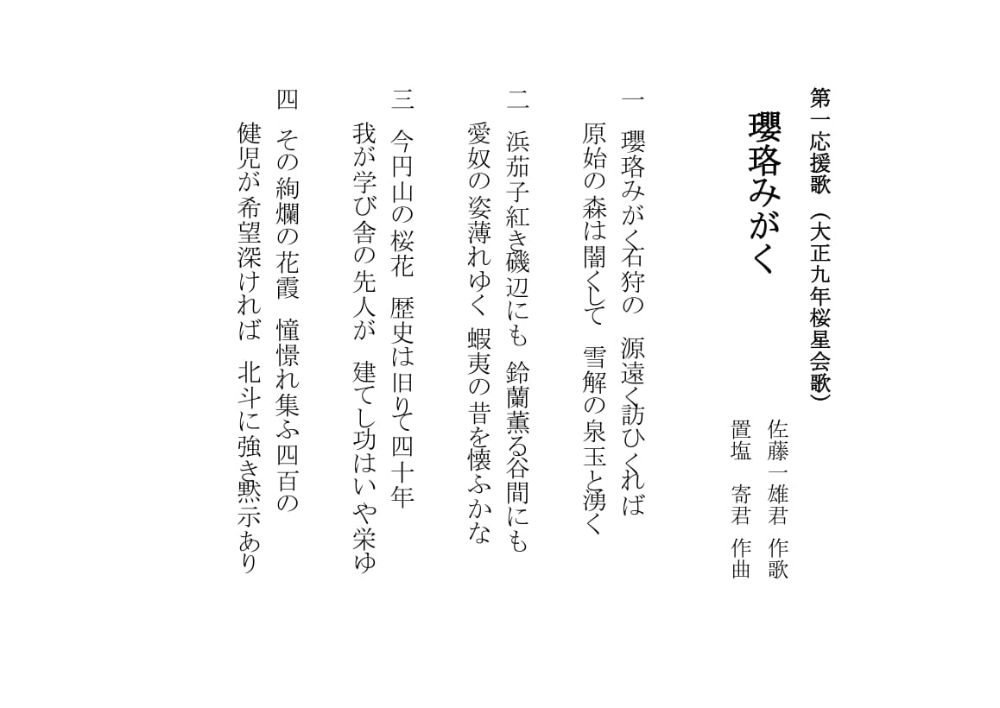
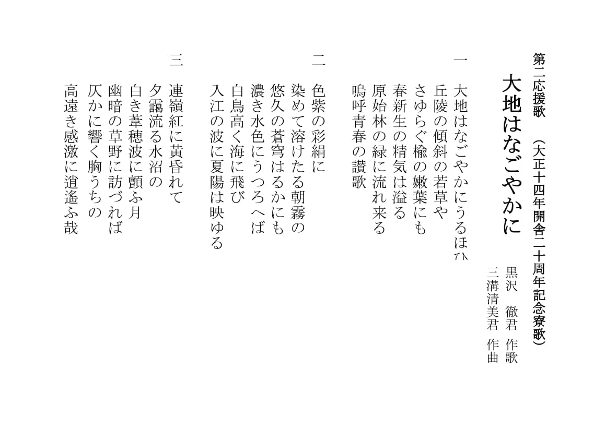
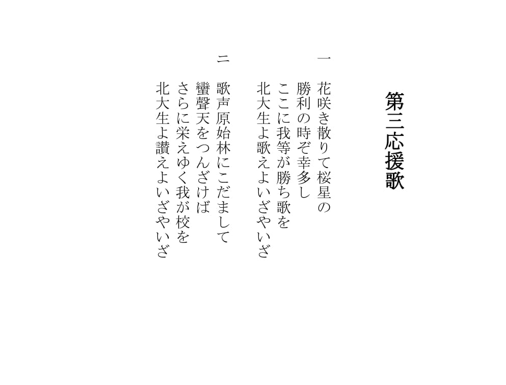
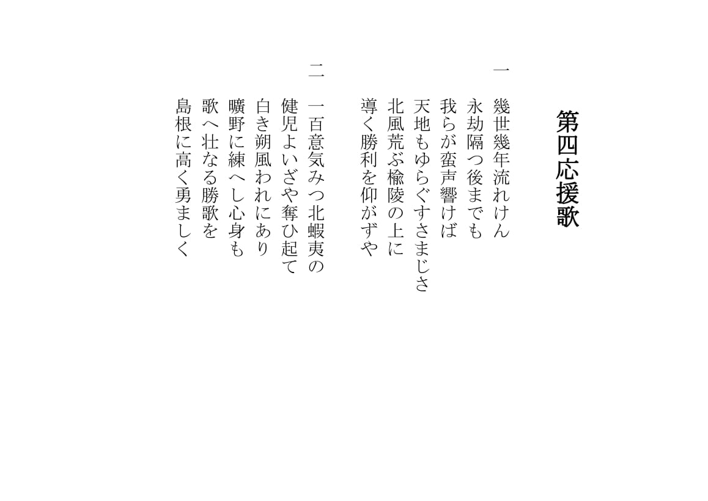
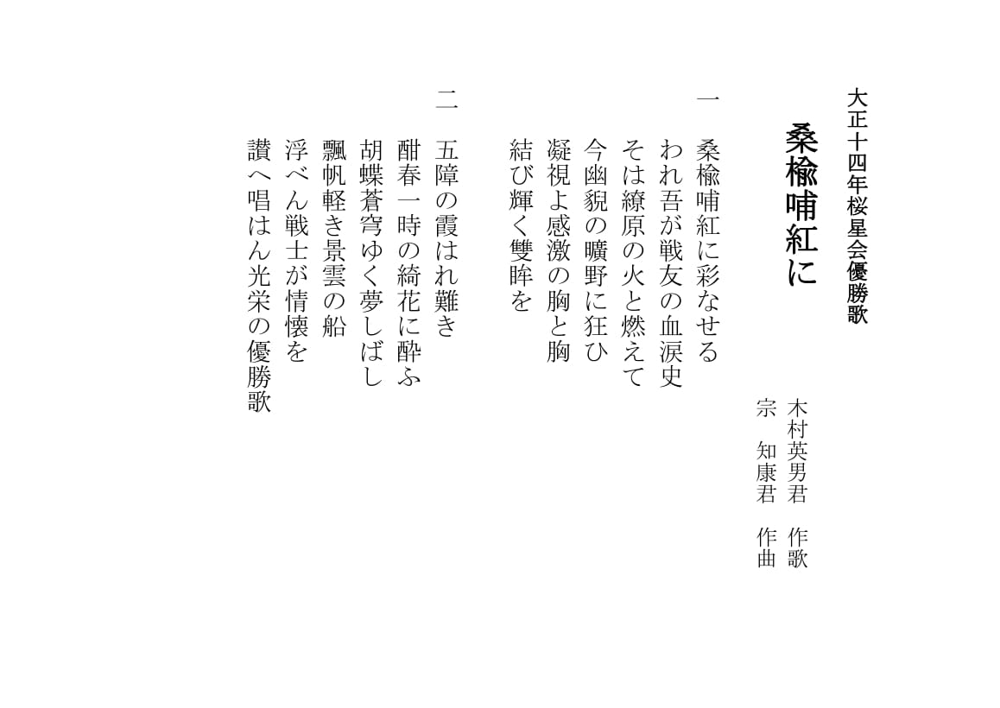
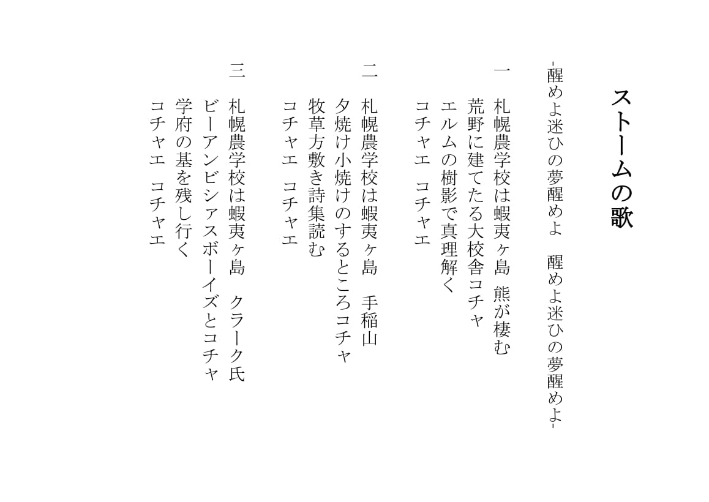

校歌・応援歌紹介
北海道大学校歌 永遠の幸
作歌は当時22歳の有島武郎君。メロディはアメリカ南北戦争時の北軍行進歌「Trunp! Trunp! Trunp!」です。この曲は副校長として来札し、南北戦争時には少佐として北軍に従軍したクラーク博士によって伝えられ、当時の農学校で流行していたとされています。応援では試合開始時に歌います。ゆっくりとした曲調で歌うものと楽器演奏が入りマーチ長のもの、二種類があります。
都ぞ弥生
日本三大寮歌のひとつとして有名な寮歌で、部活、サークル、研究室などいろんな場面で歌われています。応援では、試合が終了した際にみんなで肩を組み歌います。
第一応援歌 瓔珞みがく
瓔珞みがく
第二応援歌 大地はなごやかに
大地を「だいち」ではなく、「ち」と読みます。もともとは恵迪寮の開舎二十周年を記念して大正時代に作られた寮歌です。応援では主に野球、準硬式野球の5回攻撃時やアメフトやバレーボールなどのセット間に、北大の勝利を祈念して1〜3番までを歌っています。まさに、青春の讃歌です。
第三応援歌
第四応援歌
この応援歌は、北大恵迪寮の大正2年度寮歌「幾世幾年」の替え歌です。牧歌的な曲調のなかで、北の地で強い志をもって励む健児らの様子が歌われています。主に野球応援の際、一回裏または二回表で一番はじめに歌う応援歌です。
優勝歌 桑楡哺紅に
この歌は、北大の大正十四年桜星会優勝歌です。桜星会とは今の体育会の前身のことであり、この歌は現在でも七大戦で優勝した際に歌われることがあります。ゆっくりとした曲調で、優勝の喜びをかみしめるような歌です。
ストームの歌
ストームの際に歌う歌です。応援では野球やラクロス、アメフトなどで得点が入った際に、観客や選手と肩を組んで一番を歌います。
